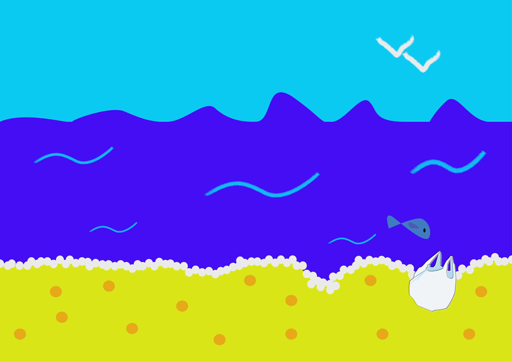
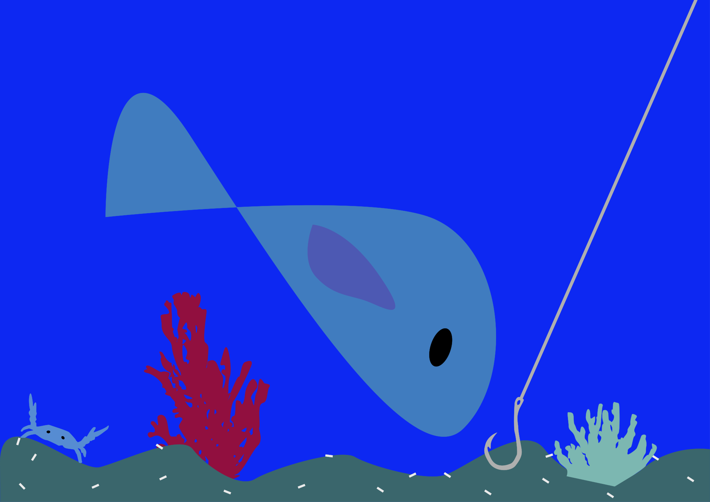
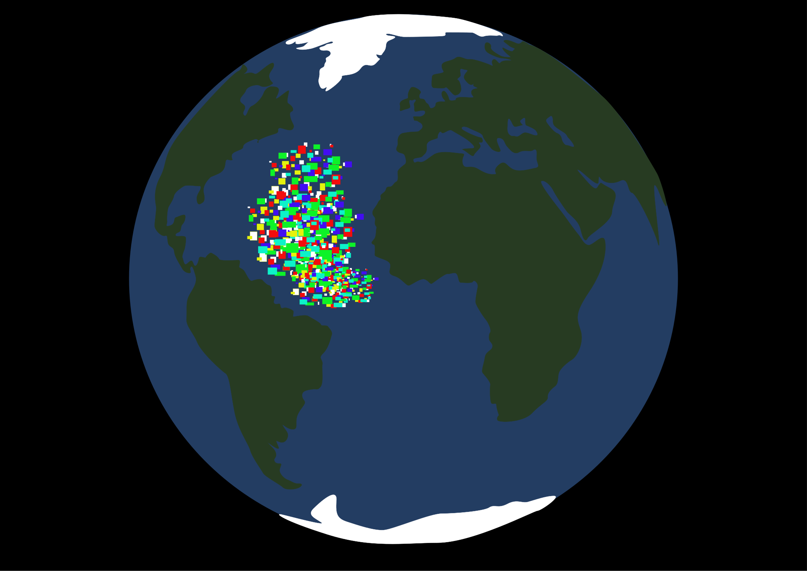

Comment un simple déchet plastique abandonné sur terre peut-il finir par avoir un impact à grande échelle sur les océans ?
Plus de 11 millions de tonnes de plastique arrivent dans les mers chaque année.
Une grande partie des déchets vient de la terre, mais les activités en mer jouent aussi un rôle.
Les animaux marins peuvent avaler du plastique ou se retrouver coincés dans des déchets.
Le plastique ne disparaît pas : il se fragmente en morceaux de plus en plus petits.
Le Great Pacific Garbage Patch est une immense zone où les courants concentrent les déchets.